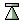

![[^]](../icons/first.png)
![[v]](../icons/last.png)

![[bottom]](../icons/bottom.png)
![[index]](../icons/index.png)
![[help]](../icons/help.png)
- doc/man/sr/mcdiff.1.in

.TH MCDIFF 1 "%DATE_OF_MAN_PAGE%" "ПН верзија %MAN_VERSION%" "ГНУ\-ов поноћни наредник" .SH НАЗИВ mcdiff \- Уграђени diff прегледач ГНУ\-овог поноћног наредника.. .SH УПОТРЕБА .B mcdiff [\-bcCdfhstVx?] дато1 дато2 .SH ОПИС mcdiff је веза ка .BR mc \-у, главној извршној датотеци ГНУ\-овог поноћног наредника. Извршавање ГНУ\-овог поноћног наредника под овим именом захтева покретање уграђеног diff прегледача, који пореди .I дато1 са .IR дато2 , задатим у командној линији. .SH ОПЦИЈЕ .TP .I "\-b" Намеће црно\-бели приказ. .TP .I "\-c" Намеће колор режим на терминалима на којима је .B mcdiff подразумевано црно\-бео. .TP .I "\-d" Деактивира подршку за миша. .TP .I "\-f" Приказује укомпајлиране путање за претрагу за датотеке Поноћног наредника. .TP .I \-S арг, \-\-skin=арг Задаје назив скина у командној линији. .TP .I "\-t" Користи се само ако је код компајлиран са S\-Lang\-ом и terminfo\-ом: чини да Поноћни наредник користи вредност променљиве .B TERMCAP за информације о терминалу уместо информација из системске базе терминала .TP .I "\-V" Приказује верзију програма. .TP .I "\-x" Намеће xterm режим. Користи се на терминалима сагласним са xterm\-ом (два екранска режима и способност за слање ескејп секвенци миша). .SH ДАТОТЕКЕ .I %pkgdatadir%/mc.hlp .IP Датотека помоћи за овај програм. .PP .I %pkgdatadir%/mc.ini .IP Подразумевана системска подешавања ГНУ\-овог Поноћног наредника, која се користе само ако не постоји корисничка датотека ~/.config/mc/ini. .PP .I %pkgdatadir%/mc.lib .IP Глобална подешавања Поноћног наредника. Подешавања у овој датотеци утичу на све кориснике, без обзира на то да ли имају ~/.config/mc/ini или не. .PP .I ~/.config/mc/ini .IP Корисничка подешавања. Ако је ова датотека присутна, онда се подешавања учитавају одавде уместо из системске датотеке са подешавањима. .SH ЛИЦЕНЦА Овај програм се расподељује под одредбама ГНУ\-ове опште јавне лиценце коју је објавила Задужбина за слободни софтвер. Погледајте уграђену помоћ за детаље о Лиценци и одсуству гаранције. .SH ДОСТУПНОСТ Најновија верзија овог програма се може наћи на \X'tty: link https://ftp.osuosl.org/pub/midnightcommander/'https://ftp.osuosl.org/pub/midnightcommander/\X'tty: link' . .SH ВИДЕТИ И mc(1), mcedit(1), mcview(1) .SH ГРЕШКЕ Грешке пријавите на \X'tty: link https://github.com/MidnightCommander/mc/issues'https://github.com/MidnightCommander/mc/issues\X'tty: link' .